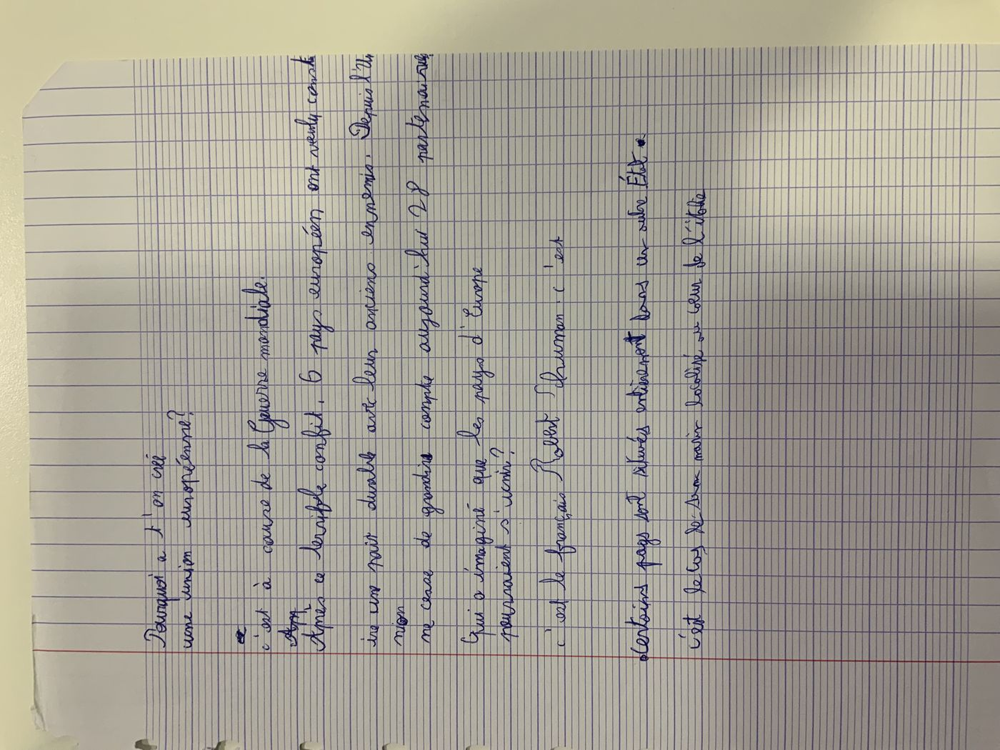
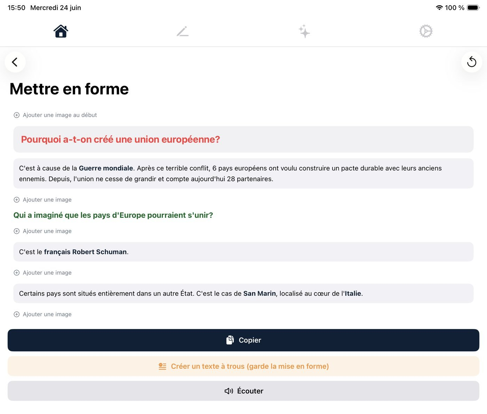
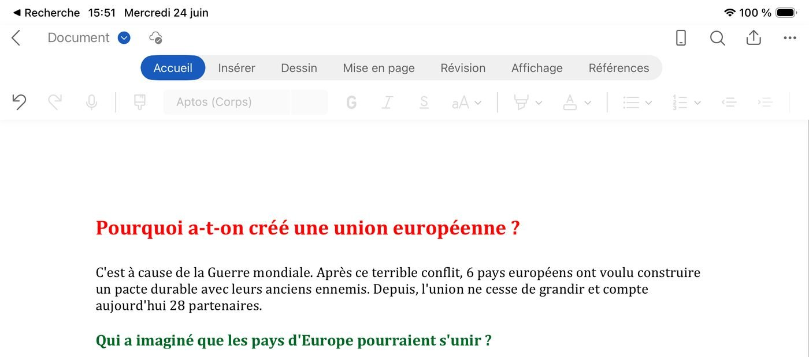
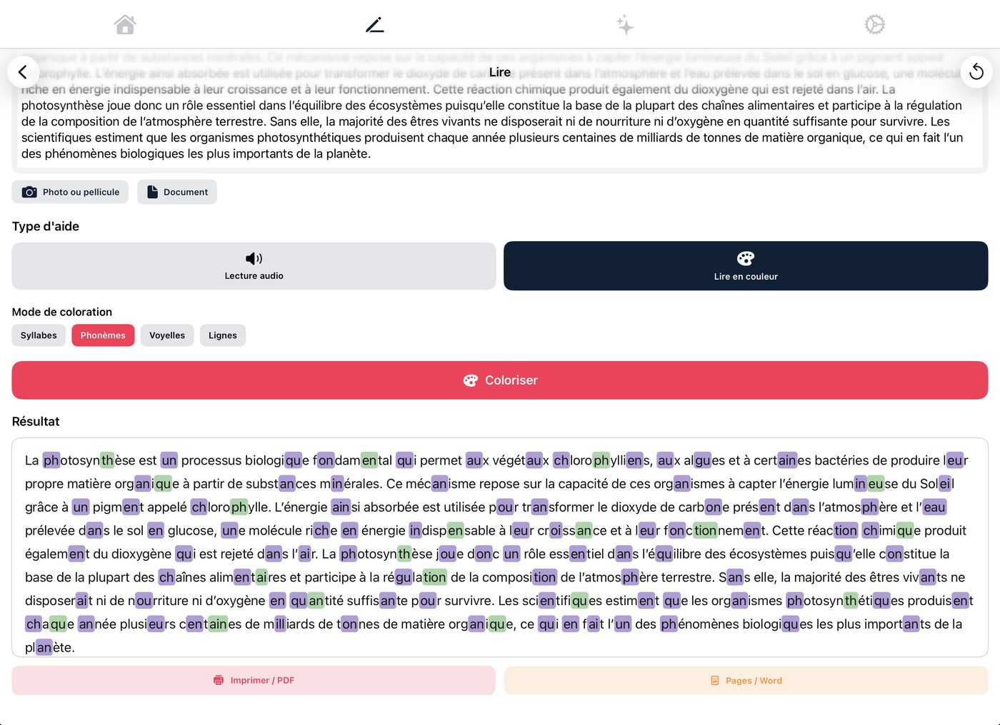
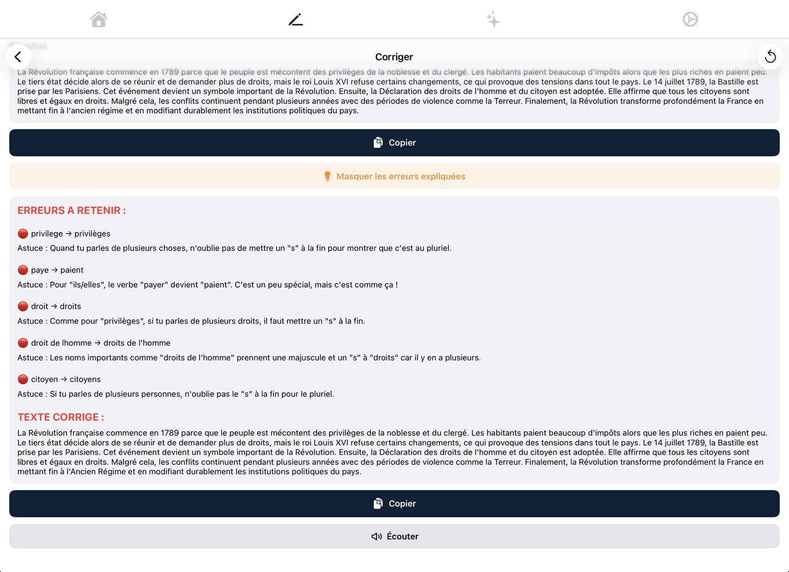

Lire. Comprendre. Écrire. Apprendre.
Faire des fautes n'est pas une fatalité
Kursif corrige, explique, lit à voix haute et met en forme n'importe quel texte ou cahier photographié — sans prise de tête. Pensé pour les élèves dys, leurs enseignants et leurs parents, sur iPad.
la révolussion francèse a comanssé en 1789 parske le peuble étai tré mécontan des privilèje de la noblaisse et du clergé. bokou de gens avai du mal a se nourir et devai payé dé zimpot tré élevé alor que lé plus riche en payai trè peu.
La révolution française a commencé en 1789 parce que le peuple était très mécontent des privilèges de la noblesse et du clergé. Beaucoup de gens avaient du mal à se nourrir et devaient payer des impôts très élevés alors que les plus riches en payaient très peu.
Vrai texte, vraie correction — d'autres exemples dans la section Corriger.
Une photo de cahier.
Un cours nickel.
Plus besoin de déchiffrer.

Même manuscrit, même un peu en bazar. On s'en occupe.

Mettre en forme structure tout, avec des titres colorés — et propose direct de transformer ça en texte à trous.

Collé dans Word, Pages ou OneNote, sans rien casser. Promis.
Lire, sans s'arracher les cheveux
Un même texte, écouté à voix haute avec le mot lu surligné, ou colorié par syllabes, phonèmes, voyelles ou lignes. Un seul écran, deux façons de s'en sortir.

- Expliquer — « Il t'explique tes devoirs. Il ne les fait pas — désolé. » Reformule une consigne ou une notion, jamais l'exercice à ta place.
- Dictionnaire donne la définition et un exemple d'un mot ou d'une expression.
- Traduire traduit dans la langue de ton choix, avec lecture audio dans cette langue.

Il corrige tes fautes sans te faire la leçon
Pas juste un texte propre balancé sans explication. Pour chaque erreur retenue, une astuce pour ne plus la refaire — histoire que ça serve aussi la prochaine fois.
Quand tu parles de plusieurs choses, n'oublie pas de mettre un « s » à la fin pour montrer que c'est au pluriel.
Pour « ils/elles », le verbe « payer » devient « paient ». C'est un peu spécial, mais c'est comme ça !
Tout ce que Kursif sait faire
(oui, tout ça)
Rangées en quatre familles claires, depuis l'écran d'accueil — pas un labyrinthe de menus.
Corriger
Orthographe, grammaire, ponctuation, avec option erreurs expliquées.
Réécrire
Clarifier et améliorer un texte sans en changer le fond.
Expliquer
Reformule une consigne ou une notion, sans faire l'exercice à ta place.
Dictionnaire
Définition et exemple d'un mot ou d'une expression.
Lire
Lecture audio surlignée, ou lecture en couleur par syllabes, phonèmes, voyelles ou lignes.
Traduire
Traduit dans la langue choisie, avec lecture audio dans cette langue.
Mettre en forme
Structure, titres colorés, paragraphes — avec insertion d'images.
Séquencer
Décompose une consigne complexe en étapes simples.
Résumer
Garde l'essentiel d'un texte long.
Fiche synthèse
Les points clés d'un cours, structurés pour réviser.
Texte à trous
Généré depuis un texte ou un cours, en gardant sa mise en forme.
Évaluation
QCM, vrai/faux et questions ouvertes, combinables, en nombre proportionné au texte.
Ce qu'on ne sait pas (encore) faire
Un schéma compliqué, une carte mentale, un circuit ? On n'invente pas un résultat juste pour avoir l'air malin. On te le dit, cash.
[SCHÉMA NON TRANSCRIT]Kursif aide à lire, écrire et comprendre. Il ne remplace pas un enseignant, un orthophoniste ou un accompagnement humain — il leur file juste un coup de main.
Trois usages, un seul outil
Lire et écrire sans s'épuiser
Un cours imbuvable devient lisible, une rédaction se corrige sans attendre, et chaque erreur s'accompagne d'une astuce pour progresser.
Adapter un support, vite
Une photo de cours devient un support structuré, puis un texte à trous ou une évaluation — sans tout reconstruire à la main un dimanche soir.
Aider, sans tout refaire
De quoi accompagner les devoirs sans être expert·e, en gardant un œil sur ce que Kursif explique — et ce qu'il ne fait jamais à la place de l'enfant.
Tes données, on n'y touche pas
Le détail complet est dans notre politique de confidentialité.
Aucun compte à créer
Tes réglages et ton historique restent sur ton appareil, jamais sur un serveur central.
Transmission chiffrée
Le texte ou l'image soumis à une fonction est chiffré, traité, puis non conservé au-delà du nécessaire.
Zéro pub, zéro tracking
Pas de localisation, pas de profil publicitaire, pas de revente de données.
Sous-traitants encadrés
Un accord de traitement des données encadre l'usage de l'API OpenAI pour les fonctions d'intelligence artificielle.
Kursif est disponible sur l'App Store.
Essai gratuit 7 jours, puis 4,99 €/mois. Résiliable à tout moment.